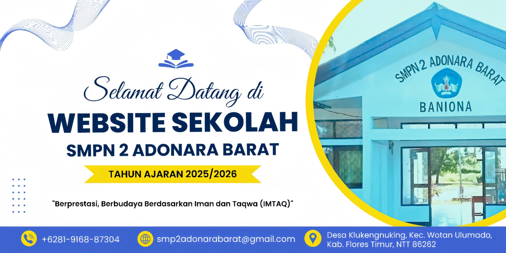

No Code Website Builder
SMP Negeri 2 Adonara Barat adalah rumah belajar bagi generasi muda yang ingin tumbuh cerdas, berkarakter, dan siap menghadapi masa depan. Berada di tengah kekayaan budaya Adonara Barat, kami hadir sebagai sekolah yang inklusif dan berwawasan luas. Didukung oleh guru-guru berdedikasi, kami mengutamakan pembelajaran yang menyenangkan, karakter yang kuat, dan keterampilan hidup yang relevan. Kami percaya, pendidikan bukan hanya soal nilai, tapi juga membentuk pribadi yang santun, tangguh, dan peduli. Dengan dukungan orang tua dan masyarakat, kami terus tumbuh bersama, menciptakan ruang belajar yang penuh semangat, kolaboratif, dan berakar pada nilai-nilai lokal.
No Code Website Builder